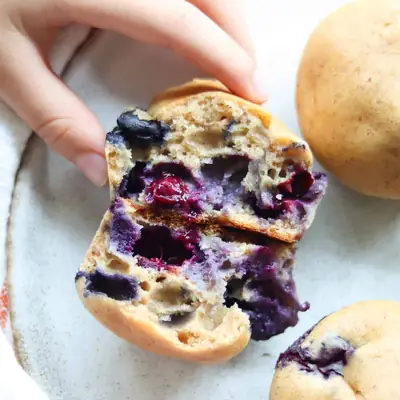

Cottage cheese muffins with blueberries

Ingredients
- 1 cup cottage cheese (225g)
- 1/4 cup rolled oats (25g)
- 2 large eggs
- 1/4 cup milk
- 4-5 dates, soaked
- 2 teaspoons vanilla extract
- 1 cup all purpose flour (120g)
- 2 teaspoon baking powder
- 1 teaspoon cinnamon
- 1/4 teaspoon salt
- 1 cup fresh blueberries (tossed with flour)
Steps
- Preheat the oven to 350 degrees Fahrenheit. Line a muffin tin with silicone muffin cup liners or grease a nonstick muffin tin. I do not recommend paper liners as the muffins will stick.
- Blend the wet ingredients: In a blender, add the cottage cheese, oats, milk, eggs, dates, and vanilla in that order. Blend until smooth and creamy.
- Stir in the dry ingredients: Add the flour, baking powder, cinnamon, and salt and fold in gently, using a spoon or spatula, until just combined. Do not overmix!
- Fold in blueberries: Gently fold in the blueberries.
- Divide the batter evenly among the muffin cups.
- Bake: Place the muffins in the preheated oven and bake for about 18-22 minutes, or until a toothpick inserted into the center comes out clean.
- Cool and serve: Allow the muffins to cool for a few minutes in the tin, then transfer to a wire rack to cool completely.
Recipe by Min Kwon · Kidfriendly Meals, from MJ and Hungryman. Saved here for personal use; the original has the full notes, tips and photos. Open original